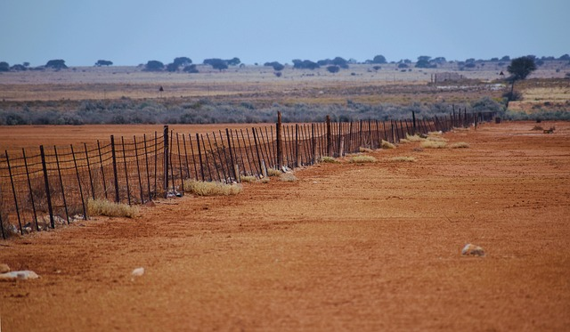
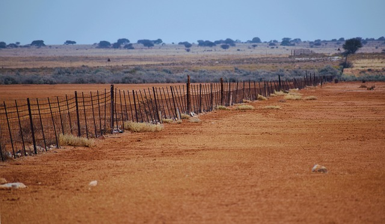

Farming Region Five - Arid and Marginal Zone
Soil characteristics
Region Five encompasses the hottest and driest parts of Zimbabwe, including areas in the southern Lowveld, parts of Matabeleland South, and southern Masvingo. This region receives very low and erratic rainfall and is best suited for extensive livestock production and drought-tolerant crops.
Here's a bit more detail about these soil types in Region Five:
Sandy and skeletal soils :
These soils are shallow, highly drained, and prone to erosion. They have very low fertility and water-holding capacity, requiring significant inputs to support any form of crop production.Arenosols and Leptosols:
Arenosols are loose, sandy soils with low nutrient retention, while Leptosols are very shallow soils found on rocky terrain. Both are challenging for cropping but can support extensive grazing systems.Soil types in Region 5 of Zimbabwe: